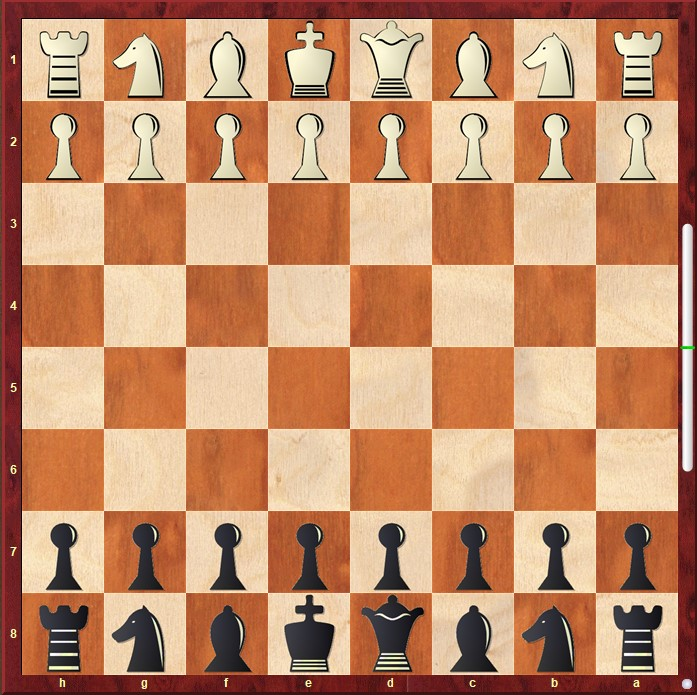

Шахматы
Добро пожаловать на мой сайт про шахматы!

Основные правила:
- Белые всегда ходят первыми
- Цель игры — поставить мат королю соперника
- Каждая фигура ходит по своим правилам
- Если король под угрозой — это шах
- Нельзя делать ход, после которого твой король под шахом
Фигуры:
- ♔ Король — самая важная фигура
- ♕ Ферзь — самая сильная фигура
- ♖ Ладья — ходит по прямой
- ♗ Слон — ходит по диагонали
- ♘ Конь — ходит буквой Г
- ♙ Пешка — ходит вперёд, бьёт по диагонали
Сайт сделан Нышанбай Жанболатом